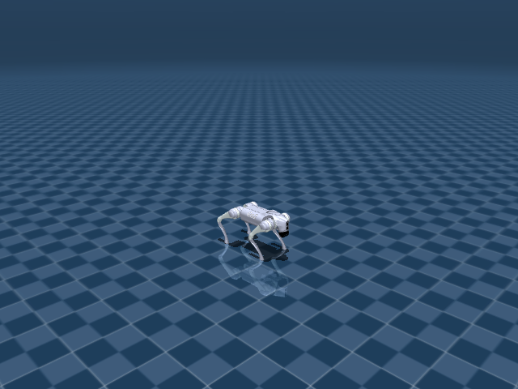

Go2 Joystick Flat
任务目标
训练 Go2 在平地上跟踪 x/y/yaw 速度命令，形成可迁移到更复杂 Go2 任务的基础步态。

图片由
_tools/render_static_images.py使用src/unilab/assets/robots/go2/scene_flat.xml的 MuJoCo scene 离屏渲染生成；如果当前环境无法启用 EGL/OSMesa，生成 manifest 会记录失败原因。
证据索引
| 项目 | 内容 |
|---|---|
| 任务类别 | 运动控制 |
| 机器人 | go2 |
| 代表 scene | src/unilab/assets/robots/go2/scene_flat.xml |
| 代表源码 | src/unilab/envs/locomotion/go2/joystick.py |
| 代表 owner YAML | conf/appo/task/go2_joystick_flat/mujoco.yaml |
| 动作维度 | 12 |
Registry 与 Owner
| 注册名 | 后端 | 配置类 | 配置源码 |
|---|---|---|---|
| Go2JoystickFlat | motrix, mujoco | Go2JoystickCfg | src/unilab/envs/locomotion/go2/joystick.py |
| 算法组 | 后端 | training.task_name | owner YAML |
|---|---|---|---|
| appo | motrix | Go2JoystickFlat | conf/appo/task/go2_joystick_flat/motrix.yaml |
| appo | mujoco | Go2JoystickFlat | conf/appo/task/go2_joystick_flat/mujoco.yaml |
| flashsac | mujoco | Go2JoystickFlat | conf/offpolicy/task/flashsac/go2_joystick_flat/mujoco.yaml |
| td3 | motrix | Go2JoystickFlat | conf/offpolicy/task/td3/go2_joystick_flat/motrix.yaml |
| ppo | motrix | Go2JoystickFlat | conf/ppo/task/go2_joystick_flat/motrix.yaml |
| ppo | mujoco | Go2JoystickFlat | conf/ppo/task/go2_joystick_flat/mujoco.yaml |
代码级执行流
这部分不再用通用关键词套模板，而是为 go2_joystick_flat 单独写源码导读。源码片段只负责提供证据；每节说明都围绕本任务自己的配置、状态、观测、动作和 reward 语义展开。
| 阶段 | 证据位置 | 代码级说明 |
|---|---|---|
| 1. Hydra owner | conf/appo/task/go2_joystick_flat/mujoco.yaml | 训练命令先 compose owner YAML。这里确定 training.task_name、后端身份、obs_groups、reward scale 和 env override。 |
| 2. Registry 构造 Env | src/unilab/envs/locomotion/go2/joystick.py | @registry.envcfg 注册配置类，@registry.env 注册后端实现类；训练脚本只调用 registry，不直接 new 任务类。 |
| 3. Reset/初始状态 | src/unilab/assets/robots/go2/scene_flat.xml | env 从 scene keyframe 或 motion/grasp cache 取初态，再通过 reset randomization 改写 qpos/qvel/info。 |
| 4. Obs dict | src/unilab/envs/locomotion/go2/joystick.py | env 读取 backend 传感器和 info，返回 dict；learner 根据 obs_groups_spec 和 owner algo.obs_groups 选择 actor/critic 输入。 |
| 5. Action 到控制目标 | src/unilab/envs/locomotion/go2/joystick.py | policy 输出先按 action scale / 控制顺序映射到 actuator，再由 backend step 推进仿真。 |
| 6. Reward dispatch | src/unilab/envs/locomotion/go2/joystick.py | 源码把 reward key 映射到函数，owner YAML 的 scale 决定每项奖励/惩罚是否启用以及权重。 |
| 7. Termination | src/unilab/envs/locomotion/go2/joystick.py | env 根据高度、姿态、接触、参考轨迹误差、物体状态或能量阈值生成 done/terminated。 |
本任务阅读重点
| 阅读重点 |
|---|
| Go2 平地任务是 Go2 任务族的基础：后续 rough、handstand、footstand 都能和它比较动作顺序和默认角。 |
| obs 中 feet phase 是步态相位核心，reward 中速度跟踪、姿态和 action_rate 共同塑造平地步态。 |
这个任务适合从 Go2JoystickCfg、Go2WalkTask._compute_obs、_init_reward_functions 三处读起。 |
本任务注册入口
| 注册名 | 配置类 | 可用后端 |
|---|---|---|
| Go2JoystickFlat | Go2JoystickCfg | motrix, mujoco |
本任务源码锚点
| 小节 | 源码文件 | 明确锚点 |
|---|---|---|
| 配置与注册 | src/unilab/envs/locomotion/go2/joystick.py | Go2JoystickCfg, Go2JoystickFlat |
| Obs：Go2 平地观测 | src/unilab/envs/locomotion/go2/joystick.py | obs_groups_spec, _compute_obs |
| Action：三关节四腿 | src/unilab/envs/locomotion/common/base.py | apply_action, default_angles |
| Reward：基础 locomotion | src/unilab/envs/locomotion/go2/joystick.py | _init_reward_functions, tracking_lin_vel |
| Step 后处理 | src/unilab/envs/locomotion/go2/joystick.py | update_state, terminated |
关键源码逐段解释（按本任务手写）
配置与注册
| 本任务人工导读 |
|---|
| EnvCfg 指向 Go2 flat scene，并把 reward/control/noise 默认值留在配置层。 |
| registry 的 backend 绑定让 MuJoCo/Motrix 差异停留在 backend 适配层。 |
# src/unilab/envs/locomotion/go2/joystick.py
# 用注册名把这个 cfg 暴露给 Hydra/registry；owner YAML 的 training.task_name 会指到这里。
@registry.envcfg("Go2JoystickFlat")
@dataclass
class Go2JoystickCfg(Go2BaseCfg):
# 平地任务直接使用 Go2 的 flat scene；没有 rough terrain fragment。
scene: SceneCfg = field(
default_factory=lambda: SceneCfg(
model_file=str(ASSETS_ROOT_PATH / "robots" / "go2" / "scene_flat.xml")
)
)
# 平地速度跟踪每个 episode 最长 20 秒，超时由 base env 负责 truncated。
max_episode_seconds: float = 20.0
# 初始高度等基础状态来自 InitState 和 scene keyframe。
init_state: InitState = field(default_factory=InitState)
# Commands 采样 x/y/yaw 速度命令，是 joystick flat 的主任务输入。
commands: Commands = field(default_factory=Commands)
# reward_config 必须由 owner YAML 注入；源码不在这里硬编码 scale。
reward_config: RewardConfig | None = None
# 传感器命名绑定 Go2 的速度、IMU、足端接触和足端位置。
sensor: JoystickSensor = field(default_factory=JoystickSensor)
# 平地也启用 Go2 物理参数随机化，提升策略鲁棒性。
domain_rand: Go2DomainRandConfig = field(default_factory=Go2DomainRandConfig)
# flat scene 默认没有地形课程，但字段保留给带 terrain backend 的 spawn 逻辑。
terrain_curriculum: TerrainCurriculumCfg = field(default_factory=TerrainCurriculumCfg)
Obs：Go2 平地观测
| 本任务人工导读 |
|---|
| actor obs 明确注释为 49 维，包含命令、IMU、关节和相位。 |
| critic 通过额外速度信息帮助 value 学习，但 policy 不直接依赖特权速度。 |
# src/unilab/envs/locomotion/go2/joystick.py
@property
def obs_groups_spec(self) -> dict[str, int]:
# gyro(3) + gravity(3) + diff(12) + dof_vel(12) + action(12) + cmd(3) + phase(4) = 49
# actor 只拿 49 维本体/命令/相位观测；critic 多拿 3 维 base local linvel。
return {"obs": 49, "critic": 52}# src/unilab/envs/locomotion/go2/joystick.py
def _compute_obs(
self, info: dict, linvel, gyro, gravity, dof_pos, dof_vel, feet_phase
) -> dict[str, np.ndarray]:
# 噪声开关和尺度来自 env.noise_config；flat owner 未覆盖时使用 Go2 默认。
noise_cfg = self._cfg.noise_config
# diff 表示当前 12 个关节相对 home/default_angles 的偏移。
diff = dof_pos - self.default_angles
# actor 可见的 IMU、关节角和速度会按配置加入观测噪声。
gyro = self._obs_noise(gyro, noise_cfg.scale_gyro)
gravity = self._obs_noise(gravity, noise_cfg.scale_gravity)
diff = self._obs_noise(diff, noise_cfg.scale_joint_angle)
dof_vel = self._obs_noise(dof_vel, noise_cfg.scale_joint_vel)
# linvel 只进入 critic，因此这里也按 critic 观测的噪声尺度处理。
linvel = self._obs_noise(linvel, noise_cfg.scale_linvel)
# commands 是 reset/重采样得到的目标 x/y/yaw 速度。
command = info["commands"]
# 使用当前动作作为动作历史，让策略知道上一控制目标。
last_actions = info.get("current_actions", np.zeros_like(diff))
# actor obs = IMU + 关节状态 + 动作历史 + 速度命令 + 四足相位。
obs = np.concatenate(
[gyro, -gravity, diff, dof_vel, last_actions, command, feet_phase],
axis=1,
dtype=get_global_dtype(),
)
# critic 在 actor obs 后追加真实局部线速度，帮助 value 学习速度跟踪误差。
critic = np.concatenate([obs, linvel], axis=1, dtype=get_global_dtype())
# 返回 dict 是 NpEnv contract，learner 再按 obs_groups_spec/owner obs_groups 取用。
return {"obs": obs, "critic": critic}Action：三关节四腿
| 本任务人工导读 |
|---|
| Go2 平地任务继承 locomotion common base 的 apply_action。 |
| 12 维动作按 FR/FL/RR/RL 的 hip/thigh/calf 顺序控制，默认角来自 keyframe。 |
# src/unilab/envs/locomotion/common/base.py
def apply_action(self, actions: np.ndarray, state: NpEnvState) -> np.ndarray:
# 记录上一帧和当前帧动作，reward/action_rate 与下一帧 obs 都会用到。
state.info["last_actions"] = state.info.get("current_actions", np.zeros_like(actions))
state.info["current_actions"] = actions
# 可选动作延迟用于模拟执行器/通信滞后；flat 默认关闭时直接执行当前动作。
exec_actions = (
state.info["last_actions"]
if self._cfg.control_config.simulate_action_latency
else actions
)
# 策略输出是相对默认站姿的无量纲偏移，乘 action_scale 后叠加 default_angles。
ctrl: np.ndarray = (
exec_actions * self._cfg.control_config.action_scale + self.default_angles
)
# 返回 backend actuator control target，维度等于 Go2 的 12 个腿部 actuator。
return ctrlReward：基础 locomotion
| 本任务人工导读 |
|---|
| tracking_lin_vel/tracking_ang_vel 是主任务目标。 |
| orientation、action_rate、feet_air_time 等项把速度命令约束成可站稳的步态。 |
# src/unilab/envs/locomotion/go2/joystick.py
def _init_reward_functions(self):
# reward dispatch 只登记可用函数；真正启用和权重由 owner YAML 的 reward.scales 决定。
self._reward_fns: dict[str, Any] = {
# 主目标：跟踪 joystick 采样到的平面线速度和 yaw 角速度命令。
"tracking_lin_vel": rewards.tracking_lin_vel,
"tracking_ang_vel": rewards.tracking_ang_vel,
# 约束 base 不要上下跳、不要 roll/pitch 方向剧烈旋转。
"lin_vel_z": rewards.lin_vel_z,
"ang_vel_xy": rewards.ang_vel_xy,
# 约束身体高度接近 base_height_target。
"base_height": rewards.base_height,
# 平滑动作，避免相邻控制步目标角突变。
"action_rate": rewards.action_rate,
# 约束关节不要长期偏离默认站姿太远。
"similar_to_default": rewards.similar_to_default,
# alive 可作为存活项，当前 flat owner 中 scale 为 0。
"alive": rewards.alive,
# Go2 专用足端项：摆动足高度、相位接触匹配、摆动拖地惩罚。
"swing_feet_z": self._reward_swing_feet_z,
"contact": self._reward_contact,
"foot_drag": self._reward_foot_drag,
}Step 后处理
| 本任务人工导读 |
|---|
| update_state 推进相位、读取传感器、计算 done/reward/obs。 |
| 终止主要围绕倾倒、高度和 horizon，不包含 rough 地形逻辑。 |
# src/unilab/envs/locomotion/go2/joystick.py
def update_state(self, state: NpEnvState) -> NpEnvState:
# 每个 control step 推进 gait phase；flat 使用固定 2Hz 对角步态相位。
self.phase = np.fmod(self.phase + self._cfg.ctrl_dt * self.gait_frequency, 1.0)
# FL/RR 同相，FR/RL 反相，给接触和摆动足奖励提供目标节律。
self.feet_phase[:, 0] = self.phase
self.feet_phase[:, 3] = self.phase
self.feet_phase[:, 1] = (self.phase + 0.5) % 1
self.feet_phase[:, 2] = (self.phase + 0.5) % 1
# 从 backend 读取本控制步的局部速度、IMU 和关节状态。
linvel = self.get_local_linvel()
gyro = self.get_gyro()
gravity = self._backend.get_sensor_data("upvector")
dof_pos = self.get_dof_pos()
dof_vel = self.get_dof_vel()
# 刷新四个足端接触力和足端位置，供 reward/contact/foot height 使用。
self.feet_force[:, :, :] = 0
for i in range(len(self._cfg.sensor.feet_force)):
self.feet_force[:, i, :] = self._backend.get_sensor_data(self._cfg.sensor.feet_force[i])
for i in range(len(self._cfg.sensor.feet_pos)):
self.feet_pos[:, i, :] = self._backend.get_sensor_data(self._cfg.sensor.feet_pos[i])
# upvector 的 z 分量过低说明机身已明显倾倒，触发 terminated。
terminated = gravity[:, 2] <= 0.5
# reward 和 obs 都基于同一帧传感器快照计算，避免状态不一致。
reward = self._compute_reward(state.info, linvel, gyro, dof_pos)
obs = self._compute_obs(
state.info, linvel, gyro, gravity, dof_pos, dof_vel, self.feet_phase
)
state = state.replace(obs=obs, reward=reward, terminated=terminated)
# done 包含 terminated 和超时 truncated；done 后更新 terrain curriculum 日志。
done = state.terminated | state.truncated
if np.any(done):
done_indices = np.where(done)[0]
stats = self._spawn.update_on_done(
done_indices, self._backend.get_base_pos()[done_indices]
)
if stats:
if "log" not in state.info:
state.info["log"] = {}
for k, v in stats.items():
state.info["log"][f"terrain_curriculum/{k}"] = float(v)
return stateAgent
Agent 输出 12 维腿部目标，通常由 PPO/APPO/FlashSAC/TD3 等算法消费 actor obs。
训练入口通过 owner YAML 决定注册 env、后端身份和算法参数；CLI 应使用 --sim 选择 backend owner，而不是单独 override training.sim_backend。
# conf/appo/task/go2_joystick_flat/mujoco.yaml
training:
task_name: Go2JoystickFlat
sim_backend: mujoco
algo:
obs_groups: {}
num_envs: null
max_iterations: 150Env
Env 使用 Go2WalkTask，其 reset、action space 和 obs 由 locomotion base 与 Go2 专用配置组合。
Env 必须遵守 NpEnv contract：reset() 返回 (obs_dict, info_dict)，obs 是 dict，obs_groups_spec 决定 learner 使用哪些观测组。
# src/unilab/envs/locomotion/go2/joystick.py
gyro = "gyro"
feet_force = ["FL_foot_contact", "FR_foot_contact", "RL_foot_contact", "RR_foot_contact"]
feet_pos = ["FL_pos", "FR_pos", "RL_pos", "RR_pos"]
@registry.envcfg("Go2JoystickFlat")
@dataclass
class Go2JoystickCfg(Go2BaseCfg):
scene: SceneCfg = field(
default_factory=lambda: SceneCfg(
model_file=str(ASSETS_ROOT_PATH / "robots" / "go2" / "scene_flat.xml")Obs
actor obs 包含命令、本体姿态、关节误差、关节速度和动作历史；critic 读取额外 base linvel。
Obs 字段级拆解
下面的表格把源码里的观测拼接逻辑拆成语义字段。维度如果依赖 history、terrain scan 或 motion body 数量，文档会写成“规模”而不是硬编码，避免和配置漂移。
| 观测字段 | 维度/规模 | 代码来源 | 中文说明 |
|---|---|---|---|
| command | 通常 3 维 | commands / joystick 采样 | 期望 x/y 线速度和 yaw 角速度，是策略要跟踪的外部目标。 |
| gyro | 3 维 | get_gyro() / sensor.gyro | 机身角速度，帮助策略判断身体旋转和姿态变化。 |
| gravity | 3 维 | 局部重力投影 | 把世界重力投到 body 坐标系，用于表示 roll/pitch 倾斜。 |
| dof_pos - default | nu 维 | 关节角与 keyframe 默认角差 | 告诉策略每个关节离默认站姿有多远。 |
| dof_vel | nu 维 | backend dof velocity | 关节速度，用于阻尼和判断腿部摆动速度。 |
| last_actions | nu 维 | info['last_actions'] | 上一控制步动作，帮助策略形成平滑控制。 |
| critic privileged | 任务相关 | critic obs group | 训练 critic 可读取更多速度或地形信息，actor 不一定可见。 |
owner YAML 中的 algo.obs_groups 说明算法从 env obs dict 中读取哪些组。没有写入 owner 的字段保持 env cfg 默认值，文档不臆造未配置项。
# conf/appo/task/go2_joystick_flat/mujoco.yaml
algo:
obs_groups:
{}
代码侧观测通常在 _get_obs、_build_obs、obs_groups_spec 或 base env 中组装：
# src/unilab/envs/locomotion/go2/joystick.py
sample_height = getattr(sampler, "sample_height", None)
if not callable(sample_height):
raise TypeError("terrain_surface_sampler must expose sample_height(xy)")
return cast(Callable[[np.ndarray], np.ndarray], sample_height)
@property
def obs_groups_spec(self) -> dict[str, int]:
# gyro(3) + gravity(3) + diff(12) + dof_vel(12) + action(12) + cmd(3) + phase(4) = 49
return {"obs": 49, "critic": 52}
def _init_reward_functions(self):
self._reward_fns: dict[str, Any] = {
"tracking_lin_vel": rewards.tracking_lin_vel,源码锚点拆解：
| 源码符号 | 中文说明 |
|---|---|
| obs_groups_spec | 声明 obs dict 中各观测组的维度，是 wrapper/learner 对齐观测的契约。 |
| _compute_obs | 读取 backend 传感器和 info 字段，拼接 actor/critic 观测。 |
Action
动作对应 FR/FL/RR/RL 的 hip、thigh、calf 三个关节。
Action 逐维拆解
四足任务的 action 逐维对应四条腿的 hip/thigh/calf actuator。env 在 apply_action 中把策略输出乘以 action_scale，再加到 keyframe 默认角上；因此策略学习的是“相对默认站姿的目标角偏移”，不是直接力矩。
当前代表 scene 编译出的 action 维度为 12。下表来自 MuJoCo 编译模型的 actuator 顺序，也就是策略输出维度和执行器维度的对应关系。
| Action 维度 | 执行器 | 驱动关节 | 中文含义 | 控制/限制说明 |
|---|---|---|---|---|
| 0 | FR_hip | FR_hip_joint | 右前腿髋外展/内收关节 | XML 未显式限制，实际由 env 缩放/默认角和 backend 控制 |
| 1 | FR_thigh | FR_thigh_joint | 右前腿髋俯仰（大腿）关节 | XML 未显式限制，实际由 env 缩放/默认角和 backend 控制 |
| 2 | FR_calf | FR_calf_joint | 右前腿膝关节（小腿摆动） | XML 未显式限制，实际由 env 缩放/默认角和 backend 控制 |
| 3 | FL_hip | FL_hip_joint | 左前腿髋外展/内收关节 | XML 未显式限制，实际由 env 缩放/默认角和 backend 控制 |
| 4 | FL_thigh | FL_thigh_joint | 左前腿髋俯仰（大腿）关节 | XML 未显式限制，实际由 env 缩放/默认角和 backend 控制 |
| 5 | FL_calf | FL_calf_joint | 左前腿膝关节（小腿摆动） | XML 未显式限制，实际由 env 缩放/默认角和 backend 控制 |
| 6 | RR_hip | RR_hip_joint | 右后腿髋外展/内收关节 | XML 未显式限制，实际由 env 缩放/默认角和 backend 控制 |
| 7 | RR_thigh | RR_thigh_joint | 右后腿髋俯仰（大腿）关节 | XML 未显式限制，实际由 env 缩放/默认角和 backend 控制 |
| 8 | RR_calf | RR_calf_joint | 右后腿膝关节（小腿摆动） | XML 未显式限制，实际由 env 缩放/默认角和 backend 控制 |
| 9 | RL_hip | RL_hip_joint | 左后腿髋外展/内收关节 | XML 未显式限制，实际由 env 缩放/默认角和 backend 控制 |
| 10 | RL_thigh | RL_thigh_joint | 左后腿髋俯仰（大腿）关节 | XML 未显式限制，实际由 env 缩放/默认角和 backend 控制 |
| 11 | RL_calf | RL_calf_joint | 左后腿膝关节（小腿摆动） | XML 未显式限制，实际由 env 缩放/默认角和 backend 控制 |
控制参数来自 owner YAML 的 env.control_config，缺省值由对应 env cfg/dataclass 提供。
| 配置字段 | 当前值 | 中文说明 |
|---|
# conf/appo/task/go2_joystick_flat/mujoco.yaml
env:
control_config:
{}
动作到执行器的实际映射由 backend 的 actuator control range 和 env 的 apply_action/控制函数完成：
# 未在 src/unilab/envs/locomotion/go2/joystick.py 中找到片段：apply_action, action_scale, compute_go2w_motor_ctrl, _init_action_space源码锚点拆解：
| 源码符号 | 中文说明 |
|---|
Reward
reward 以 tracking_lin_vel/tracking_ang_vel 为核心，辅以姿态、动作变化、足端接触和能耗项。
Reward 逐项拆解
reward scale 以 owner YAML 的 reward.scales 为真源；源码中的 RewardConfig 描述可用字段，训练脚本只做 Hydra 组装和注入。正数通常表示奖励，负数通常表示惩罚，0 表示该项在当前 owner 中关闭或仅保留接口。
| Reward key | Scale | 方向 | 中文含义 |
|---|---|---|---|
| tracking_lin_vel | 1.0 | 奖励 | 线速度命令跟踪奖励，鼓励机器人实际平面速度贴近 joystick/命令速度。 |
| tracking_ang_vel | 0.2 | 奖励 | 角速度命令跟踪奖励，鼓励 yaw 角速度贴近转向命令。 |
| lin_vel_z | -5.0 | 惩罚 | 竖直速度惩罚，限制 base 上下弹跳。 |
| ang_vel_xy | -0.1 | 惩罚 | 横滚/俯仰角速度惩罚，抑制身体剧烈摇摆。 |
| base_height | -100.0 | 惩罚 | 身体高度项，使 base 高度保持在任务目标附近。 |
| action_rate | -0.005 | 惩罚 | 动作变化惩罚，抑制相邻控制步之间的目标突变。 |
| similar_to_default | -0.1 | 惩罚 | 仓库 owner YAML 中声明的奖励项；具体实现见本页源码片段和 env 的 reward dispatch。 |
| alive | 0.0 | 记录/关闭 | 存活奖励，鼓励保持非终止状态。 |
| contact | 0.24 | 奖励 | 接触项，约束指定足端或身体部位的接触模式。 |
| swing_feet_z | 4.0 | 奖励 | 仓库 owner YAML 中声明的奖励项；具体实现见本页源码片段和 env 的 reward dispatch。 |
# conf/appo/task/go2_joystick_flat/mujoco.yaml
reward:
scales:
tracking_lin_vel: 1.0
tracking_ang_vel: 0.2
lin_vel_z: -5.0
ang_vel_xy: -0.1
base_height: -100.0
action_rate: -0.005
similar_to_default: -0.1
alive: 0.0
contact: 0.24
swing_feet_z: 4.0
tracking_sigma: 0.25
base_height_target: 0.3
源码中的 reward 入口：
# src/unilab/envs/locomotion/go2/joystick.py
randomize_kd: bool = True
kd_multiplier_range: list[float] = field(default_factory=lambda: [0.9, 1.1])
@dataclass
class RewardConfig:
scales: dict[str, float]
tracking_sigma: float
base_height_target: float
target_foot_height: float = 0.1
源码锚点拆解：
| 源码符号 | 中文说明 |
|---|---|
| RewardConfig: | 声明 reward 可用参数和默认 scale。 |
| _init_reward_functions | 把 reward 名称映射到源码函数，owner YAML 的 scale 会按这些 key 分发。 |
| _compute_reward | reward 相关源码锚点。 |
| _reward_base_height_values | 单个 reward 项的实现函数，通常返回每个 env 的 reward 向量。 |
| _reward_swing_feet_z | 单个 reward 项的实现函数，通常返回每个 env 的 reward 向量。 |
| _reward_foot_drag | 单个 reward 项的实现函数，通常返回每个 env 的 reward 向量。 |
| _reward_contact | 单个 reward 项的实现函数，通常返回每个 env 的 reward 向量。 |
初始状态
初始状态来自 Go2 scene 的 home keyframe，默认关节角也由该 keyframe 派生。
机器人默认姿态来自 scene/task fragment 中的 keyframe；任务 reset 在此基础上加入命令、motion reference、物体状态或随机化。
<!-- src/unilab/assets/robots/go2/scene_flat.xml -->
<contact name="RR_calf_contact2" geom1="floor" geom2="RR_calf_geom2" data="found" num="1" reduce="mindist"/>
</sensor>
<keyframe>
<key name="home" qpos="
0 0 0.3 1 0 0 0
0 0.8 -1.5# src/unilab/envs/locomotion/go2/joystick.py
sensor: JoystickSensor = field(default_factory=JoystickSensor)
domain_rand: Go2DomainRandConfig = field(default_factory=Go2DomainRandConfig)
terrain_curriculum: TerrainCurriculumCfg = field(default_factory=TerrainCurriculumCfg)
class Go2JoystickDomainRandomizationProvider(LocomotionDRProvider):
def _compute_reset_obs(
self,
env: Any,
env_ids: Any,
info_updates: Any,
linvel: Any,
gyro: Any,终止条件
身体高度、倾斜角和 episode timeout 构成主要终止面。
终止条件通常由 env 源码中的 _compute_termination(s)、reward config 阈值和 max_episode_seconds 共同决定。
# conf/appo/task/go2_joystick_flat/mujoco.yaml
env:
{}
reward:
{}
# src/unilab/envs/locomotion/go2/joystick.py
gravity = self._backend.get_sensor_data("upvector")
dof_pos = self.get_dof_pos()
dof_vel = self.get_dof_vel()
self.feet_force[:, :, :] = 0
for i in range(len(self._cfg.sensor.feet_force)):
self.feet_force[:, i, :] = self._backend.get_sensor_data(self._cfg.sensor.feet_force[i])
for i in range(len(self._cfg.sensor.feet_pos)):
self.feet_pos[:, i, :] = self._backend.get_sensor_data(self._cfg.sensor.feet_pos[i])
terminated = gravity[:, 2] <= 0.5
reward = self._compute_reward(state.info, linvel, gyro, dof_pos)
obs = self._compute_obs(
state.info, linvel, gyro, gravity, dof_pos, dof_vel, self.feet_phase
)
state = state.replace(obs=obs, reward=reward, terminated=terminated)
done = state.terminated | state.truncated
if np.any(done):
done_indices = np.where(done)[0]域随机化
domain_rand 可随机摩擦、质量、COM、重力、推力、kp/kd 与初始关节扰动。
域随机化只在 reset/interval 等冷路径触发，不在 step 热路径解析资产或探测 backend 私有能力。
域随机化字段拆解
| 配置字段 | 当前值 | 中文说明 |
|---|
# conf/appo/task/go2_joystick_flat/mujoco.yaml
env:
domain_rand:
{}
# src/unilab/envs/locomotion/go2/joystick.py
from unilab.base.np_env import NpEnvState
from unilab.base.scene import SceneCfg
from unilab.dtype_config import get_global_dtype
from unilab.envs.locomotion.common import rewards
from unilab.envs.locomotion.common.base import Sensor
from unilab.envs.locomotion.common.commands import Commands
from unilab.envs.locomotion.common.domain_rand import DomainRandConfig
from unilab.envs.locomotion.common.dr_provider import LocomotionDRProvider
from unilab.envs.locomotion.common.rewards import RewardContext
from unilab.envs.locomotion.common.terrain_spawn import (
TerrainCurriculumCfg,
TerrainSpawnManager,
)